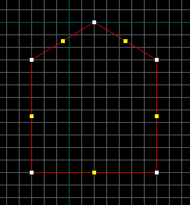
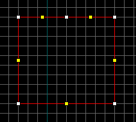
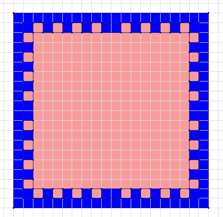

This page lists the main problems mappers might come across and the main errors they might experience when using these tools. A more complete list of errors is available on the internet here, here, and another one here, although it does not cover features (particularly raised limits) of the newer tools.
Example:
Entity 10, Brush 0, Side 4: plane with no normalEntity 10, Brush 0, Side 5: plane with no normalThis error is always caused by vertex manipulation. A plane is defined by 3 unique coordinates. If any of the three coordinates are the same, then you don't really have a plane (its either a line or a point). There is no way to fix this error other than to delete the brush and recreate it completely.
This is most commonly caused by dragging a vertex ontop of another to destroy it for several vertexes of the same face. The resulting brush can even look correct, but the side which you have destroyed can still have a point or two defined for it. The proper way to remove a face is to use a clipper. If the object is simple (say converting a square to a wedge), then dragging an edge via the yellow control points to merge multiple vertexes at once will probably be safe.
Example:
Entity 10, Brush 0, Side 5: has a coplanar plane at (-753, -9, 251), texture CA1X_CON1BEntity 10, Brush 0, Side 6: has a coplanar plane at (-753, -32, 251), texture CA1X_CON1BThis is always caused by vertex manipulation. Say you have a five sided object like the following diagram:

Moving the top point down to make the object into a square, will cause this error, as now 2 faces are on the same plane, which is not allowed:

To fix this problem, either move the vertex causing the coplanar warning to make the brush convex again, or move the rogue vertex onto one of its neighbors to destroy it.
Example:
Entity 10, Brush 0: outside world(+/-4096): (-9000, -64, 216)-(9000,23,283)There are a few cases that create the 'outside world' error. The first is an damaged brush, almost always created by a vertex manipulation gone wrong. The coordinates listed in the error are very important in diagnosing the error. If any of the coordinates are -9000 or 9000, then the brush is damaged, and most likely needs replacing completely.
The second most common case is actually having a brush near or outside the edge of the allowable region for the world. The brushes are expanded slightly for some of the calculations during a compile, so brushes near the edge within 64 units will cause the error too. The cordon tool creates brushes automatically to box in the cordon region, and their brushes can sometimes be quite large, and also extend outside the world. This can be verified by opening up the .map created by an export with cordon enabled, and looking to see what brushes it made.
Example:
Entity 0, Brush 12: mixed face contents Texture ROCK_X1 and SKYEntity 0, Brush 37: mixed face contents Texture STEEL_9 and WATER7In Half-Life, brushes are required to have all faces be of the same type (solid, water, slime, sky, origin). Fortunately almost all textures are solid. If you put a water texture on one side of a brush which has dirt or steel textures for example, that would generate the error. The engine needs to know what is inside the brush, and it would be real confusing if different types could be put onto the same brush.
The fix is relatively simple. Simlpy find the offending brush, and then the faces with the inappropriate texture and change it. If a brush uses SKY, all sides must be sky. The same is true for CLIP, and ORIGIN textures as well. If you are careful it is possible to mix water textures (provided you don't accidently use a slime texture on the brush).
The leak messages starting with ZHLT 2.4 were updated to replace the old 'LEAK LEAK LEAK' messages. The entity listed along with the error is just where the beginning of where the pointfile is created, and can be used to help find the start of the line. It always goes from inside towards the outside, from this position. Deleting this entity will usually just cause the leak to start somewhere else, without actually fixing it.
You can generally ignore these, but there is a possibility that part of the world somewhere will either be solid where it shouldn't, or vice versa.
This occurs when you have a leaf which isn't entirely convex, so that at one position within the leaf you can look out of the leaf and see back into it.
This is often a difficult error to track down as changes in the brushes in your map may cause an increase in leafportal errors. Brushes with many faces sharing the same vertex, such as spikes, are particularly common causes of this error. Doing a -full VIS often fixes this problem. If all else fails, changing the brush to a func_wall may solve the problem.
When HLRAD runs, it takes all the visible faces in the game, and divides them into sections called patches. These patches are the textures used as the lightmaps for the world. There is a hard limit of 65535 patches that HLRAD can deal with. By default, a 64x64 game unit chunk of space is the size of one patch. If the texture scaling (not texture size) is larger or smaller, it will directly affect the lightmap size as well. This means a texture with scale of 2, will have at best 1/4th as many patches as a texture with a scale of 1.
Putting a 'box' around the level to protect from leaks is the most commmon cause of this error, beyond excessively large maps. The box causes vis to keep the faces on the outside which would normally be thrown away. These faces are then required to have lightmaps. Worst case, is that putting a box around the level will usually cause an extra 40-80% more lightmaps to be created than necessary.
Barring having a box, the other cause is large maps. The fixes are varied but can only help so far. Using -chop values larger than the default 64 for HLRAD will cause the lightmaps to be larger. However, for values larger than around 96 the lightmaps start looking bad, and will more prominently show the 'staircase' effect on shadows. Using a larger scale on large textures (dirt, rock walls, concrete) will help those large surfaces consume fewer lightmaps.
For most well designed maps, vis should have a worst case run time of about 45 minutes on a single P2-300 class computer. If it is taking longer, then the map probably needs work to add vis blockers. Several things can make vis take way longer than usual:
First, if the world has been 'boxed in' to prevent leaks, vis has to spend large amounts of time on the exterior gaps which would normally not exist on a map without a box.
Second, The architecture which connects 'areas' together might be a bit confusing for vis to figure out. It is somewhat difficult to explain, but a few examples would be: halls lacking a wall somewhere which is not directly on the XZ or YZ plane; halls that intersect rooms on a plane other than XZ or YZ, large rooms with walls that are not vertical; halls that connect two areas but the areas can see each other through the hall; Lots of little tiny brushwork in an area (especially large areas) that is not an entity.
Third, vis is quickly brought to a crawl by large outdoor areas that are not extremely carefully constructed to not too see much 'indoors'.
And finally, using an older version of gensurf that does not support ZHLT's HINT brushes.
It is highly advised experiment heavily with test maps with sample architecture, using software mode, r_drawflat 1, and r_draworder 1 in order to see how vis works. Also, read the HINT brush tutorials described in the section on HINTs.
HLRAD requires large amounts of memory to run efficiently for all but the most trivial of maps.
The vismatrix HLRAD needs to run takes exponentially more RAM as the vismatrix grows. The formula is 'number of patches' squared, then divided by 16. This number is how many bytes it will consume. The maximum is 65535 patches, so the maximum vismatrix is 256MB of RAM.
Furthermore, the amount of memory the vismatrix uses is not all the memory HLRAD needs to run. Depending on the visibility of the map, the 'scales' cache consumes large amounts of memory at once as well. For most maps, this amount of memory is close to 1/2 the size of the vismatrix. This generally equates to a maximum of 128MB, or a system total of 384MB to run the worst case (65535 patches) map.
The makescales phase has a tendency to run fast right up until it runs out of physical memory and has to start relying on the swapfile. This is frequently noticeable as makescales running quickly (say 20 minutes) up until the 90% mark, then taking several hours to finish the last 10%. This is always caused by running out of physical memory, and the last 10% work requiring heavy use of the swapfile. If more architecture is added to the map, one can see that it will start taking exponentially longer to compile, until the RAM is upgraded.
Besides simply adding large quantities of RAM to the computer, the fix for this problem is identical to fixing a MAX_PATCHES error. Applying those fixes will reduce the number of patches, and cause HLRAD to need less memory, often speeding up the compile dramatically. If all has been done, there is also the option of using -bounce 0 with HLRAD, and using just direct lighting for test compiles of the map. Ideally one would then using a non-zero -bounce for the final compile.
This is typically caused by having extremely large scales on faces, (typically far above 10, usually 100+). Otherwise it almost always shows up on a 'check for problems' in Worldcraft as a 'texture axis perpendicular to face' error.
This error message can be caused several ways:
HLRAD was run without HLVIS being run first. Only direct lighting can be done, which is equivalent to running -bounce 0 when there is vis data normally. This warning commonly occurs when compiling from within Worldcraft in normal mode instead of expert mode, as it does vis after rad for some inane reason.
A few dynamic lights in an area are trying to light up the same surfaces. This limit is 4. Any light with a targetname (whether it was meant to be switchable or not), and any light set to 'pulsating' etc counts against a dynamic light in the area.
This is normally caused by having large rooms which connect to a lot of other hallways, alcoves, or other similar shapes. Alternatively it is caused by an invalid brush, of which each one is usually unique and you would have to find on your own (though Worldcraft is pretty good about finding them in its 'check for problems' feature).

This image is an example top-down view of a complex room. The pink area is the room, the blue area are the walls. The main big room is one leaf, each alcove is a leaf, but the big leaf joins all the little ones for a total of 32 portals. MAX_PORTALS_ON_LEAF is 256 in Halflife, so this problem is quite rare and usually a side effect of having a damaged brush in the map.
There isn't any way to add more nodes or clipnodes to the bsp's (its already maxed out). However, at least clipnodes can be reduced with a bit of work.
When the maps are compiled all the 3D 'space' a player can get to is broken up into convex regions just like brushes are required to be. A lot of them are extremely small or too small for a player, and if you put a CLIP brush over them they don't become clipnodes at all (well really there are still a few intersecting the brush on its surfaces, but the brush can be excluding dozens or hundreds of them at a time).
If the world has had a 'box' placed around it to prevent leaks, its probably causing several thousand (if not 10000+) extraneous nodes and clipnodes to be caused, not only wasting resources but will cause vis to work a lot harder than it needs to. An example map is available, demonstrating how it is possible to reduce the clipnodes in a map. Without the CLIP brush in place, the map requires over a hundred more clipnodes to define the player-accessable space.
The map has grown too complex. There are too many planes in the map and your map will need to be simplified/shrunk.
This should be a rare error due to the planes limit being raised in the p series of tools (because the opt_plns tool can strip out redundant planes). It was more common with older versions of the tools.
There is a great tutorial on HINT brushes on CounterMap here and another article by David Nixon here (formerly hosted on the VERC Collective). There is also an interesting article on constructing pyramidal HINT brushes here. See also the information about the HINT texture here.
If you get an error saying that one of the compile tools is not a valid Win32 application (sample picture), this probably means that you are trying to use the 64-bit version of ZHLT on a 32-bit machine. Please download the latest version of ZHLT for 32-bit processors instead.
{kind=link}